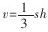

小学数学教学要注意联系实际，加强实践活动 [1]
小学数学教学要注意联系实际，加强实践活动，这是由数学学科及义务教育的性质、任务、培养目标决定的。
“数学作为一门科学，它不仅具有严密的逻辑性和广泛的应用性，同时它更具有高度的抽象性。任何一个自然数、一个算式，都是客观世界中特定事物的数量或数量关系的高度抽象。这种纯粹化的抽象性，一方面形成了数学知识本身最显著的特点，另一方面也构成了学生学习数学的主要障碍。”小学生的思维一般是从形象思维逐步过渡到抽象思维，而形象思维又离不开“感知”。因此，在教学中联系学生实际，安排一些实践活动，通过让学生“摆一摆”“拼一拼”“看一看”“量一量”“做一做”“想一想”“说一说”等感知途径，把操作、思维、语言有机地结合起来，这样既激发了学生学习数学的兴趣，培养了学生的动手操作技能，更好地理解和掌握数学基础知识，又使学生受到“实践第一”等辩证唯物主义观点的启蒙教育。
学生学习数学知识，最终目的在于应用，因为学是为用服务的，学只有在运用的过程中，才能表现出真正的价值，离开了用，学也就失去了存在的意义。小学生将所学知识应用于周围生活实际和生产劳动中，主要是学会解决问题的基本步骤和思考方法，了解所学知识在实际中的应用情况，进而培养学生这方面的兴趣及思想意识，使学生能主动地积极地把所学到的知识应用于实际。随着现代科学技术的飞速发展，数学在日常生活、生产建设和科学研究中的应用越来越广泛。“因此。掌握一定的数学基础知识和基本技能，是我国公民应当具备的文化素养之一。”
义务教育是在法律保障下的对适龄儿童和少年进行的普及教育。它肩负着提高全民族素质，为培养适合现代化建设所需要的各级各类合格人才打基础的任务。今天的小学生，将是21世纪社会主义建设的生力军。他们的素质如何，将关系着整个中华民族素质的提高，关系着经济的腾飞和社会的发展。小学数学又是义务教育的一门重要学科，“从小给学生打好数学的初步基础，发展思维能力，培养学习数学的兴趣，养成良好的学习习惯，对于贯彻德、智、体全面发展的教育方针，培养有理想、有道德、有文化、有纪律的社会主义公民，提高全民族的素质，具有十分重要的意义”。这也是“教育要面向现代化、面向世界、面向未来”的需要。
现代教学论认为：教学的目的只有通过学习者自身的积极参与、内化、吸收才能实现。教学的这一本质属性决定了学生是学习活动的主体，其能否主动地投入，成为教学成败的关键。因此，在小学数学教学中，从生活现实出发，把教材内容与现实生活结合起来，这样既符合小学生年龄阶段的特点，又可以有效地培养学生参与意识，从而达到运用数学知识解决实际问题的目的。
《九年义务教育全日制小学数学教学大纲（试用）》在“教学中应该注意的几个问题”中对小学数学教学要注意联系实际，加强实践活动提出了明确、具体的要求：在加强基础知识教学时，“要从学生已有的知识和经验出发，通过实物、教具、学具或者实际事例，引导学生在理解的基础上掌握，防止死记硬背。”在重视发展智力、培养能力方面，大纲指出：“学生初步的逻辑思维能力的发展，需要有一个长期的培养和训练过程，要有意识地结合教学内容进行。教学时，要遵循学生的认知规律，重视学生获取知识的思维过程。通过操作、观察，引导学生进行比较、分析、综合，在感性材料的基础上，加以抽象、概括，进行简单的判断、推理。”“应用题教学是培养学生解决简单的实际问题和发展思维的一个重要方面。要注意联系学生的生活实际，引导学生分析数量关系，掌握解题思路。”“几何初步知识的教学，要充分利用和创造各种条件，引导学生通过物体、模型等的观察、测量、拼摆、画图、制作、实验等活动，掌握形体的基本特征和面积、体积的计算方法，并注意在实际中应用，以利于培养初步的空间观念。”能够运用所学的知识解决简单的实际问题，“要引导学生了解数学知识的实际应用，从当地实际出发，进行调查，收集数据，在教师的帮助和指导下，编成数学问题，进行计算、解答，或作一些简单的统计，逐步培养学生这方面的兴趣、意识和解决实际问题的能力。”结合学科特点，对学生进行思想品德育，要“通过阐明数学在日常生活和生产建设中的广泛应用，激发学生学习数学的兴趣，不断进行学习目的的教育”等。
根据大纲对“数学教学要注意联系实际，加强实践活动”的要求，在教学过程中，一方面教师要结合具体的教学内容进行安排，另一方面要根据教学需要进行安排。
结合教学内容进行安排，如教学两位数加一位数、整十数，要通过摆小棒使学生弄清为什么算34+2把4和2相加，而算34+20时要把30和20相加，学生通过操作，理解了相同单位的数相加的道理，口算时就可以减少不同数位上的数相加减的错误。教学表内除法时，通过实际分物品，使学生弄清两种分法，从而理解除法的含义，教学梯形面积公式的推导，启发引导学生自己根据学过的三角形、平行四边形面积公式的推导方法，将课前准备好的两个大小全等的梯形动手拼摆，看能不能转化成已学过的图形，学生人人动手，很快发现可以拼成一个平行四边形，并发现拼成的平行四边形的底就是原来梯形上底与下底的和，平行四边形的高就是原来梯形的高，于是推出公式：梯形的面积=（上底+下底）×高÷2。学生还可以通过其他方法的拼摆，进一步验证公式的正确性。这样，学生就会沉浸在成功的喜悦之中。应用题教学重在引导学生分析数量关系，掌握解题思路。例如：教学求两数相差多少的应用题，要通过摆学具使学生逐步弄清较大的数可以分成两部分，一部分是和较小的数同样多的，另一部分是比较小的数多的。这样，要求较大的数比较小的数多几，就要从较大的数中去掉和较小的数同样多的那部分，剩下的就是比较小的数多的，所以要用减法计算。求比一个数多（或少）几的应用题，也通过操作进行类似的分析。采取这种方法教学，符合儿童认知规律，学生对应用题的数量关系清楚，就能正确地进行分析和解答。另一方面，教师要有意识地让学生运用所学的数学知识解决一些简单的实际问题，如学习了百分数以后，让学生进行种子发芽试验，然后根据种子发芽率的高低，决定单位面积的播种量，使学生既懂得了科学种田的道理，又巩固了所学知识。学习了纳税和利息后，让学生到社会上做些调查，使学生切身体会和了解数学知识在实际中的广泛应用，增强学生的应用意识。结合教学内容，安排学生的实践活动，应尽力做到：在概念教学中，让学生参与概念的形成过程；在计算教学中，让学生参与算理和算法的探究过程；在应用题教学中，让学生参与数量关系的分析过程；在几何公式的教学中，让学生参与公式的推导过程。真正体现学生在学习活动中的主体地位。
根据教学需要进行安排，主要是讲求实效、要灵活，可安排在课前、课中或课后。比如：教“小数的初步认识”时，课前要求学生到市场上去了解商品的价格情况，选择几种最常用的物品，绘制成商品价牌，为新授课提供丰富的实际材料。授课时教师就可以直接利用学生手中的材料，在实物投影仪上加以分析、讲解。这样可以增强学生的参与意识，激发他们学习的热情。在课堂教学中，教师要为学生参与教学过程创造条件，创设教学情境。如有位教师在将圆锥体的体积公式

时是这样安排教学程序的；首先按教材编排，用等底等高的圆锥和圆柱容器，让学生量黄沙，做实验，然后让学生表述圆锥和圆柱的体积关系，几乎所有学生都异口同声的说：“圆锥体积是圆柱体积的三分之一；圆柱体积是圆锥体积的三倍。”这时教师把学生自己得出的结论写在黑板上。接着，又让学生用底、高不相等的圆锥和圆柱容器做第二轮实验。结果，根本就不是1:3的关系，这就推翻了学生自己原先得出的结论。这是怎么回事呢？这时教师让学生带着疑问，仔细观察几次实验用的圆锥和圆柱容器，认真思考，寻找原因。学生终于发现：一定要在等底等高的条件下，圆锥体积才是圆柱体积的三分之一，圆柱体积才是圆锥体积的三倍。于是教师用彩色粉笔把学生得出的原结论补充完整，突出了“等底等高”这个充分必要条件。学生在实验中得出结论，又在实验中否定结论，最后在思考中完善结论，经历了“肯定——否定——肯定”的实践与思辨的过程。这样既能培养学生探索知识的兴趣和能力，又能使学生获得扎实的科学知识。有时还可以在学习新知识后，比如学习了长方形和正方形的面积，就让学生回家去帮助父母测量并计算出房间地面的面积，计算出装修房间地面所需地砖数及购买地砖的钱数，这样既可培养学生的动手能力、预算能力，又可十分有效的巩固所学的数学知识，让数学又回到现实生活中去。当然，在具体安排时也应注意：“要从联系学生的生活实际开始，随着学生年龄和知识的增长，逐步扩大联系实际的范围。”“联系实际和参加实践活动要紧密结合基础知识的教学，注意不要超越学生的接受能力。”同时还要注意面向全体，最大限度地调动每个学生学习的积极性和主动性，使人人都应有观察、操作、表达、思考、交流、表现等机会。
总之，数学知识的学习应该遵循“感知—理解—应用—反馈”的规律，使学生理解和认识数学知识的发生、发展过程，切身体验和认识数学知识的重要用途，增强应用意识，明确为什么学、学什么以及怎样学，以全面完成小学数学的教学任务，达到预期的教学目标。